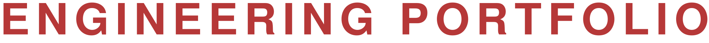
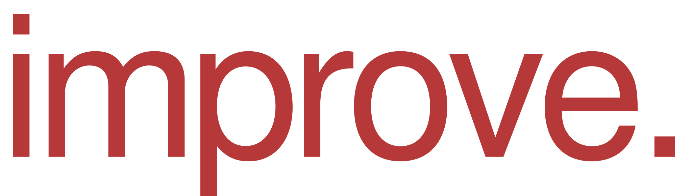

Inspired by challenges. Driven to 
Designing products, developing solutions and improving how things work.
My work
Expertise
Inspired by the challenge of making things better.
I’m a mechanical engineer and designer with experience in product development, industrial automation and engineering projects, from initial concepts to detailed design and implementation.
I care about the details that make a design work: how parts fit together, how something is built and how it performs in practice. I enjoy questioning existing approaches, exploring new technologies and finding ways to improve both the result and the process behind it.
My experience working with international teams has shaped a collaborative approach to engineering. In addition to project work, I work on standardization and reusable tools that help teams deliver more consistent, efficient work.